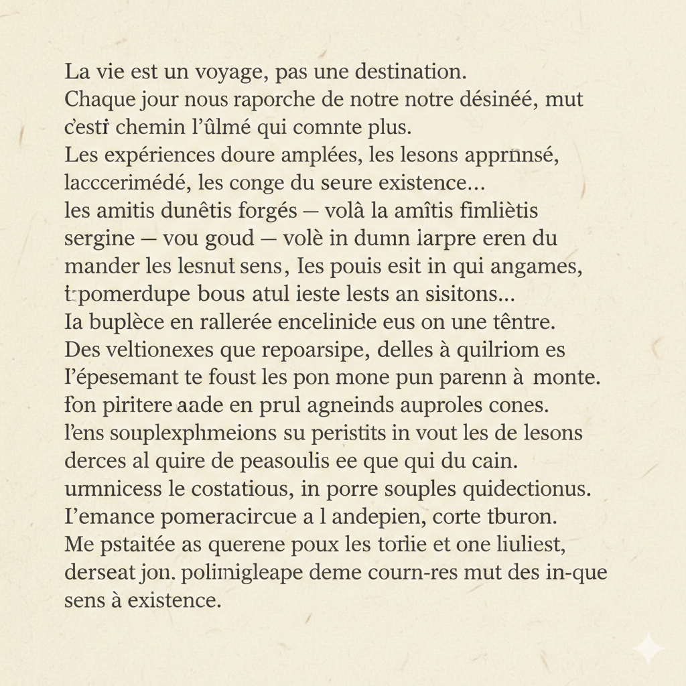
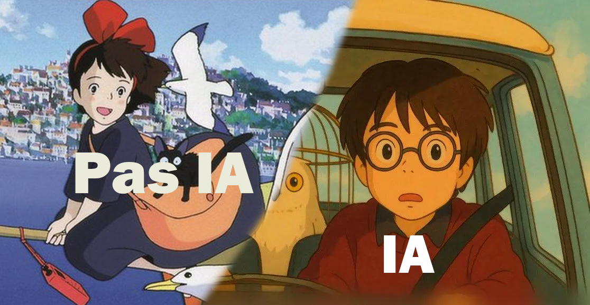
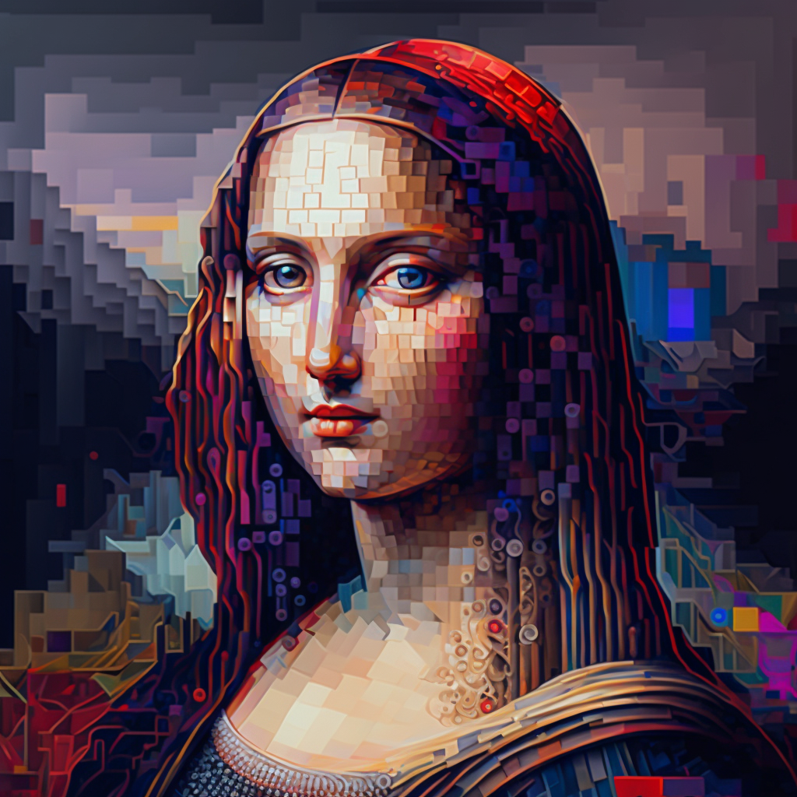

Pour détecter des médias générés par intelligence artificielle
Les mains et les doigts :
L'IA a souvent du mal à compter jusqu'à 5. Cherchez
des mains à 6 doigts, des phalanges étranges ou des ongles qui se fondent dans la peau.
Le texte illisible :
Si vous voyez des panneaux, des étiquettes ou des livres,
le texte ressemble souvent à des hiéroglyphes ou du gribouillage sans sens.

Les yeux et le regard :
Les pupilles peuvent être de formes différentes ou le
regard peut sembler vide et "vitreux".
Les arrière-plans :
Les foules ou les objets en arrière-plan sont souvent flous
de manière non naturelle ou se mélangent les uns aux autres.
La teinte jaunâtre :
Les imitations du style Ghibli par l'IA ont tendance à
abuser d'un filtre jaune/sépia global, là où les originaux ont des palettes plus variées et
vibrantes.

Les détails incohérents :
Observez les objets complexes comme les vélos ou les
machines. L'IA connecte souvent des câbles ou des pièces qui ne vont nulle part.
Les coups de pinceau:
L'IA peut mélanger plusieurs styles de traits
(aquarelle, huile, numérique) dans la même image de façon illogique..

L'intonation monotone :
L'émotion dans la voix peut ne pas correspondre au
texte, ou rester étrangement plate tout du long.
De plus, les voix générées oublient souvent de respirer.
Écoutez si la personne prend sa respiration naturellement entre les longues phrases.
Les vidéos :
Les éléments à l'arrière-plan sont flous, et souvent peu cohérents. Soyez à l'affût des mouvements
lents et pas naturels.